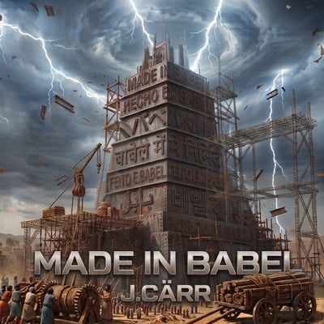

Single · 5 octubre 2026
Made in Babel
Christian EDM, Future Bass y Dubstep con voces y vocal chops en siete idiomas.

Single punta de lanza
Siete idiomas. Una sola identidad.
Made in Babel presenta el universo del álbum homónimo a través de inglés, español, japonés, hindi, portugués, coreano y francés. La producción combina melodías emocionales de Future Bass con drops de Dubstep y una identidad abiertamente Christian EDM.
El single funciona como puerta de entrada al concepto de Made in Babel, álbum de ocho pistas que se estrena el 9 de noviembre de 2026.